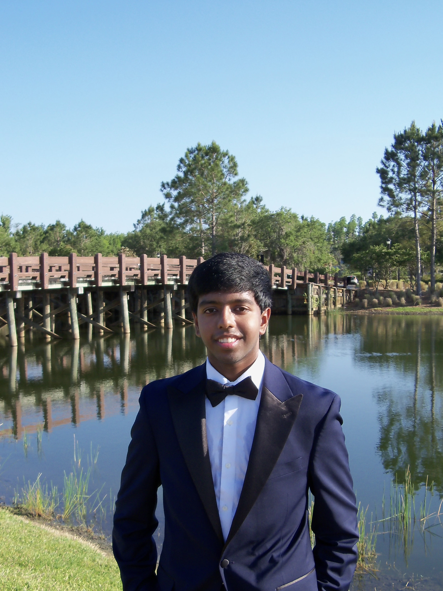
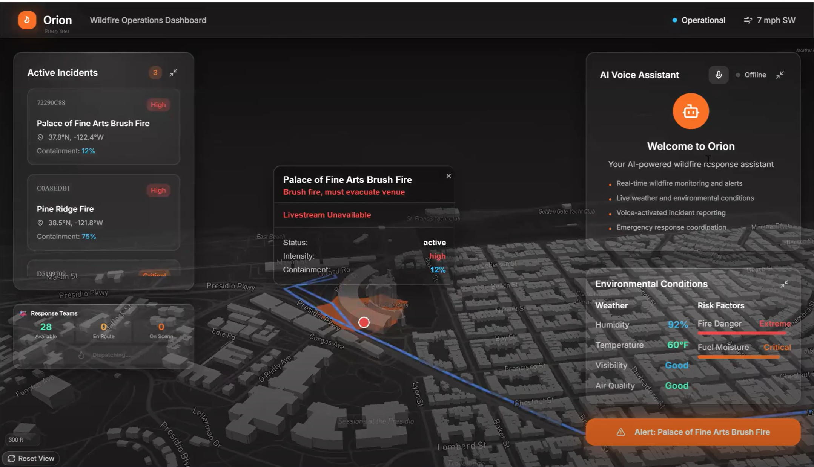
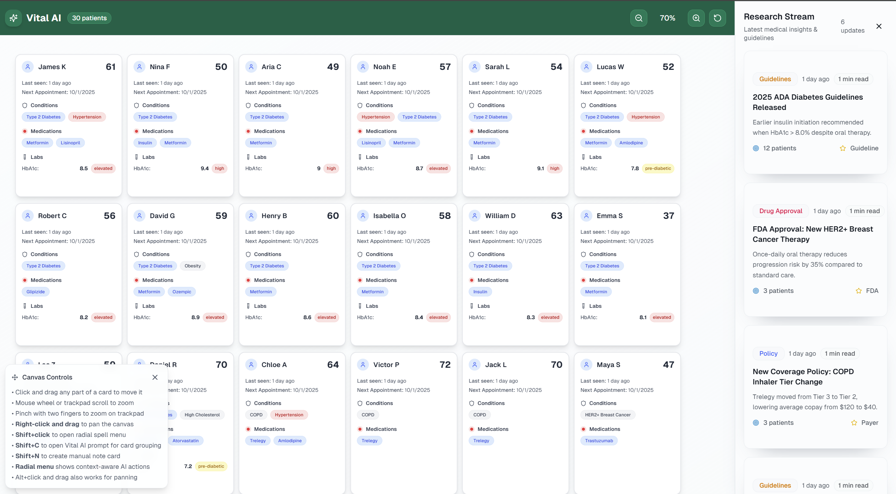

You can preview my resume below. Use the download button to save a copy or open in a new tab.

Me
Hey, I'm Adhik Durga, a Computer Engineer interested in building cool things.
I’m interested in systems that sit at the intersection of software, embedded hardware, and applied AI, including from microcontrollers and sensors to cloud services that make data useful and safe. This site highlights my projects (from Raspberry Pi builds to agentic AI systems), my roadmap at Georgia Tech, and where I’m heading next.
What you’ll find here:
About — my background, interests, and values.
Projects — hands-on builds and research highlights.
Resume — quick overview + downloadable PDF.
Career Goals — short/long-term plan and milestones.
Contact — where to reach me.
Resume
My Background / About Me
I’m a Computer Engineering (CompE) student at Georgia Tech with a 4.0 GPA, focused on building systems that connect the physical and digital worlds. I enjoy solving difficult problems where constraints like latency, power, bandwidth, safety, or human factors matter. That’s why I gravitate toward computing hardware, AI/ML development, and software development.
Outside of class, I participate in numerous clubs such as Silicon Jackets, Trading @ GT, and Startup Exchange. I've also worked on a plethora of projects ranging from Raspberry Pi to hackathon winning Full stack projects. My academic goals are grounded in becoming a well-rounded engineer: strong C/CPP/Python fundamentals, hardware bring-up, version control, CI, testing, and careful documentation. My professional goals are to contribute to fintech, AI hardware, or work on startups.
My Work / My Projects


Orion (CalHacks Winner)
In California, more than 26 million residents live under wildfire threat, and incident commanders often rely on outdated systems like radios, spreadsheets, texts, and maps to coordinate responses. Through conversations with volunteers and responders, we saw how critical minutes were lost switching tools instead of fighting fires. We envisioned Orion as an AI-powered command center that unifies situational awareness, routing, and communication in a single dashboard, helping responders act faster, smarter, and safer.

Vital (HackGT Winner)
Physicians are inundated daily with new research, drug approvals, and policy updates. Many spend hours reviewing medical literature to ensure they’re giving patients the most current care, but most simply can’t keep up. This information overload leads to inefficiency and outdated treatment plans. Our team set out to build a tool that automatically digests the world’s latest medical evidence and helps clinicians see, in real time, which of their patients are affected by those changes. We wanted to turn information overload into actionable insight.
Discovery Project
For my Discovery Project, I wanted to build something that combined hardware, software, and a real-world application of embedded systems. After seeing how many security systems only have one form of authentication, I decided to create a multi-factor access control system using a Raspberry Pi, an RFID scanner, and a camera. The goal was to simulate a secure door-entry system where access is only granted if both an authorized RFID tag is scanned and a human face is detected by the camera.
Career Goals
Vision: Hopefully start my own company one day.
Short-Term (Next 2 Years)
- Deepen technical foundations in programming and hardware and learn more skills.
- Get involved with more research and continue extracurriculars.
- Pursue internships with organizations that share similar interests to me and do interesting work.
Long-Term (5-7 Years)
- Lead or contribute to the top teams in my industry who align with my interests.
- Work on my startup and hopefully get funding.